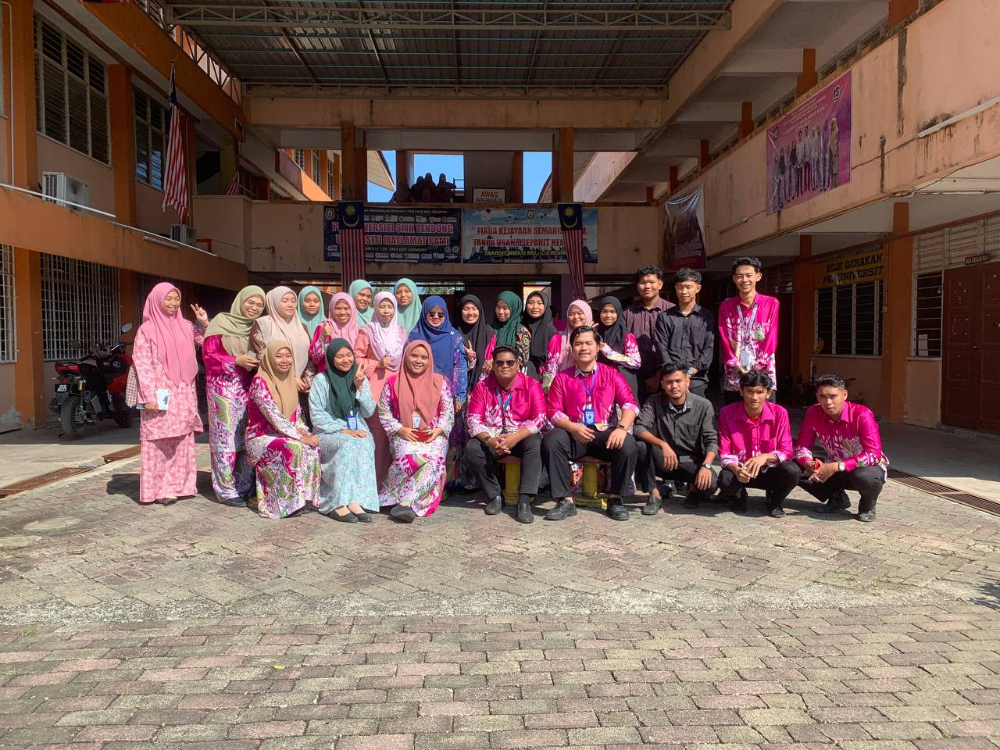
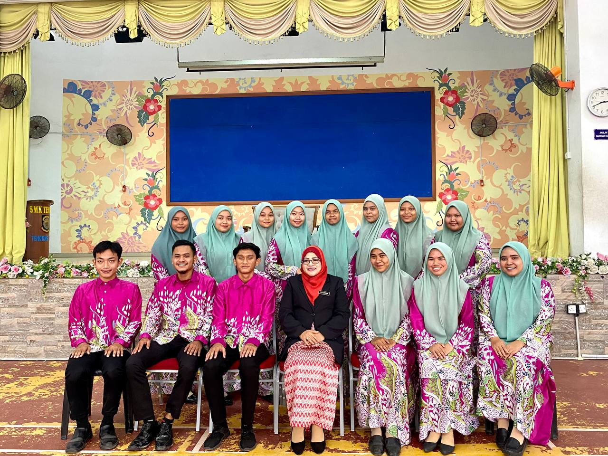

From the early days of finger painting in kindergarten to the sleepless nights of university exams, my education journey has been a path of discovery, growth, and transformation. My name is Fadhlin Fairuz, and as I reflect on the various stages of my academic life, I am reminded of the invaluable experiences and lessons that have shaped who I am today.
Reflecting on my education journey from kindergarten to university, I am grateful for the experiences and people who have influenced my path. Each stage of my education has contributed to my growth, equipping me with the knowledge, skills, and values needed to navigate the complexities of life. As I look forward to the future, I am excited to continue learning, exploring, and contributing to the world. My education journey has been a testament to the power of perseverance, curiosity, and the relentless pursuit of excellence.
KINDERGARDEN
My education journey began at Tabika Nur Iman (B), a vibrant place filled with laughter, colorful books, and playful learning. I remember the joy of storytime, where I first discovered my love for reading. My kindergarten teacher introduced me to the magical world of books, sparking a lifelong passion for stories and knowledge. It was here that I learned the basics of social interaction, cooperation, and the importance of curiosity.
PRIMARY SCHOOL
My primary school at Sekolah Kebangsaan Othman Talib (1) was a period of foundational learning and exploration. In these formative years, I developed essential skills in reading, writing, and mathematics. This experience ignited my interest in the natural world and set the stage for my future academic pursuits.
SECONDARY SCHOOL
High school at Maahad Muhammadi Pasir Pekan was a period of intense growth and self-discovery. Academically, I took advanced courses in mathematics and business, which prepared me for the rigors of university studies. Beyond academics, I was an active member of the student council. These experiences taught me teamwork, and time management.
FORM SIX


Transitioning to form six at Sekolah Menengah Kebangsaan Tendong was both challenging and exhilarating. It was a time of new friendships, increasing academic responsibilities, and discovering my interests. Here I have improved my public speaking and critical thinking skills. Additionally, my involvement in the school’s robotics club introduced me to the fascinating world of technology and engineering.
UNIVERSITY LIFE
Currently, I am pursuing a Bachelor’s degree in Information Science (Hons) Information Management at University Technology Mara Kedah Branch. University life has been an incredible journey of academic rigor and personal growth. The transition from high school to university was marked by increased independence and responsibility. My courses are challenging, but they are also immensely rewarding. I am involved in research projects that focus on sustainable energy solutions, which align with my passion for environmental conservation. Living on campus has provided me with a diverse and enriching experience. I have met people from different cultural backgrounds, which has broadened my horizons and taught me the value of inclusivity and diversity. The vibrant campus life, with its myriad of activities and events, has allowed me to pursue my interests in music and sports alongside my academic commitments.